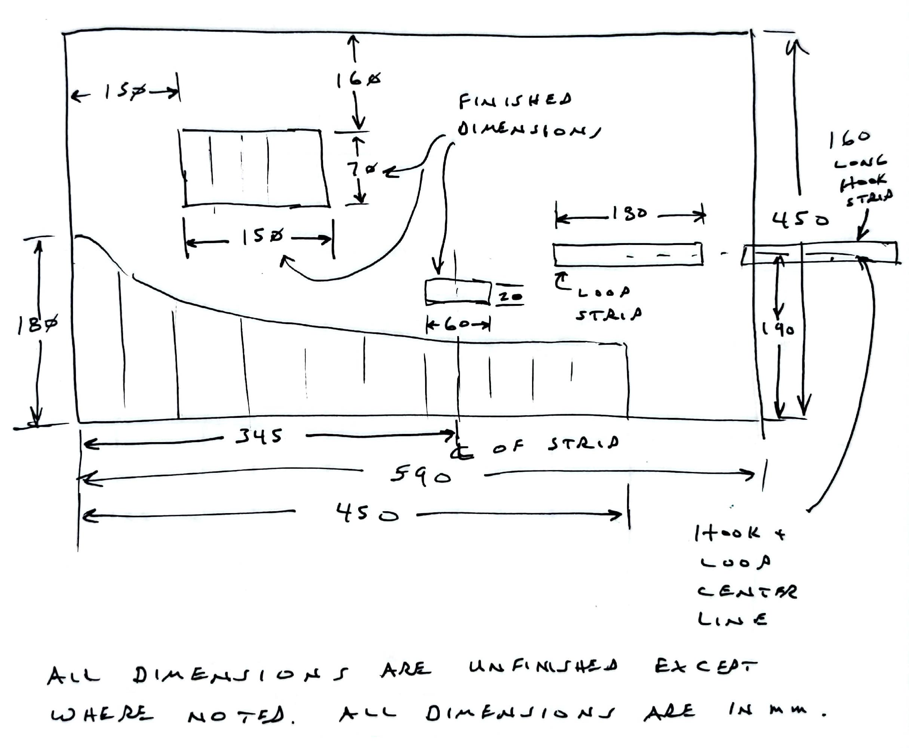

7 Toolkit
The tools needed to service a GT buggy easily fit in the backpack, but, if left loose, they could damage the bladder and would make a lot of noise. To address both problems, make a tool roll to hold your buggy tools.

The toolkit is designed to hold the tools needed to service a GT R6 buggy. Specifically, it has spots for these tools:
1/2” rachet wrench
3/8” rachet wrench
30mm deep socket
1/2 socket wrench extension
10mm deep socket
13mm deep socket
17mm deep socket
200mm adjustable wrench
A multitool
A small case for Schrader valves and a valve tool

7.1 Parts
From Ottertex® Waterproof Canvas, cut these panels:
Main panel: 590 mm x 450 mm
Lower pockets: 450 mm x 180 mm
Upper pockets: 170 mm x 90 mm
Adjustable wrench loop: 80 mm x 40 mm
From hook and loop closure cut these pieces:
180 mm loop strip
160 mm hook strip
7.2 Assembly
7.2.0.1 Lower pocket
Mark lower pocket panel according to the dimensions on Figure 7.3
Measure from the unfinished left edge of the lower pocket panel when marking the vertical stitch lines. At each stitch line, measure from the unfinished bottom edge of the lower pocket panel and add 10mm to each height to allow for a 1 cm folded hem at the top of this panel.
It will be easier to mark the backside in pencil and easier to install the lower pocket backside up.
Connect the dots along the descending slope of the lower pocket panel. Cut along the line to shape the panel. Cut out a 1 cm square from the top right corner of the panel, then hem the top and right edges of the panel.
7.2.0.2 Main panel
Mark the main panel according to Figure 7.4. Mark the backside of the fabric (this is the face shown in that figure.) with pencil to locate the upper pocket, the adjustable wrench loop and the hook-and-loop strips. It’s not noted in Figure 7.4, but the loop strip on the face of the main panel should be 60 mm from the unfinished right edge.

Cut 2 cm squares from each corner of the main panel. Align the lower pocket panel with the main panel, folding a shirt tail hem over the lower pocket panel. Sew a the shirt tail hem in all four edges of the main panel, being sure to stitch the lower pocket panel in the the same seam.
7.2.0.3 Upper pocket panel
Cut 1 cm squares from the each corner of the upper pocket panel. Hem all four edges of this panel.
Align the upper pocket panel according to Figure 7.4. Stitch the left, right and bottom edges to the main panel.
7.2.0.4 Adjustable wrench loop
Cut 1 cm squares from the each corner of the adjustable wrench loop. Hem all four edges of this panel.
Align the adjustable wrench loop according to Figure 7.4. Stitch the left and right edges to the main panel.
7.2.0.5 Hook-and-loop strips
Flip the main panel face up, align the loop strip fuzzy side up, 15 cm above the finished bottom edge and 4 cm from the right edge. Stitch all four edges.
Align the hook strip at the same height as the loop strip, but hook side down. Overlap 2 cm of the hook strip with the right edge of the main panel. Stitch the edges of the overlapped portion of the hook strip.
7.2.0.6 Pockets
Flip the main panel to the standard orientation. Mark the position of each pocket stitch line. Straight stitch along each such line.